A differential is used in the rear axle of three and four wheel vehicles. When such a vehicle turns, the wheel on the outside of the turn must follow a longer path than the wheel on the inside. Since both wheels have the same circumference, the outside wheel must turn faster. A differential is the mechanism used to achieve the difference in turning rate.
| The picture shows how to make the "square" subassembly. You will need four of these to make one differential. | 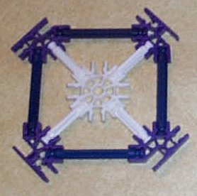 |
| The picture shows the construction of the "Z" subassembly. There are two "Z" subassemblies in one differential. | 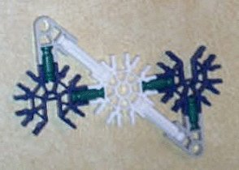 |
|
The gearing of the differential is supported by a box framework formed of the two "Z" subassemblies and two of the "square" subassemblies. Join two sides of the box assembly by sliding the blue connector of the "Z" subassembly into the purple connector of the "square" subassembly. |
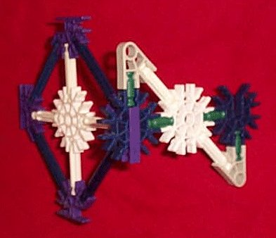 |
|
Add the other "square" subassembly opposite the first one and then add the remaining "Z" subassembly to form the box framework. |
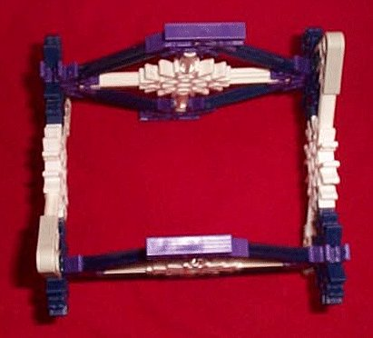 |
|
Make two of these cross braces to serve as the remaining two sides of the box framework. |
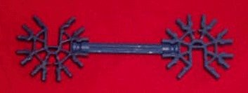 |
| Connect them to the remaining purple connectors of the box assembly. | 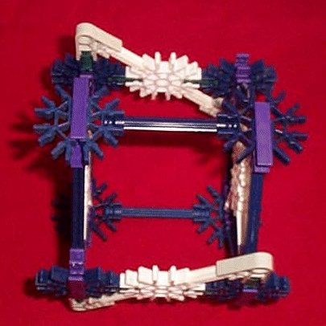 |
| Add four purple connectors and four green rods to each of the remaining two "square" subassemblies. | 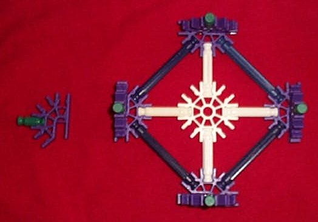 |
|
Add one of the resulting assemblies to each end of the box framework. These extensions to the box framework provide additional support for the axles and provide a means of mounting the large yellow ring gear without its mounting hardware interfering with the side gears. |
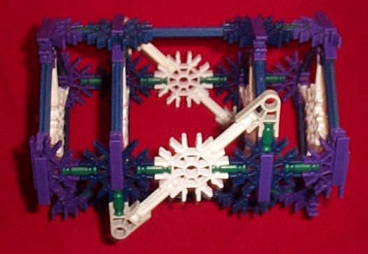 |
There are four gears that are mounted inside the box framework of the differential.
One medium sized red gear mounted to each axle. These are the side gears of the differential.
Two medium sized yellow spur gears are used as the pinion gears of the differential. Their axis of rotation is perpendicular to that of the axles. The pinion gears couple the motions of the two side gears (and the axles) to each other and to the motion of the framework.
|
Collect two sets of the parts shown except for the white connector. The white connector is not needed as it is already present as part of the "Z" subassembly. The parts are shown in the order that they will be strung onto the red rod. The white connector shown is already part of the "Z" subassembly. |
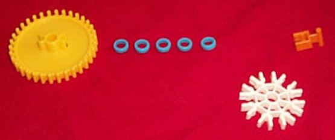 |
|
The two sets of these parts are strung onto the red rod in mirror opposition. The red rod is also mounted through the centers of the white connectors of the two "Z" subassemblies as shown. Note that the spurs on the yellow gears point inward so that they will mesh with the side gears. |
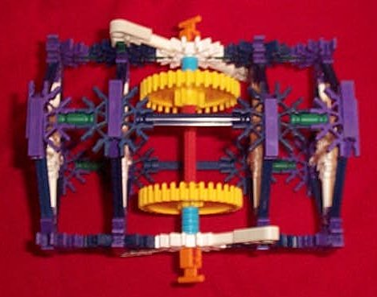 |
| One differential side gear is mounted on each axle. | 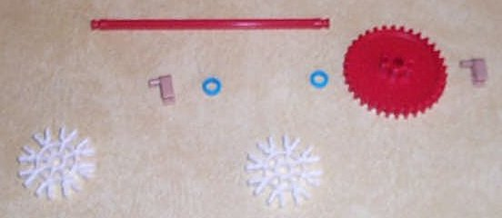 |
|
This pictire shows one differential side gear mounted onto the framework. To simplify the picture, only one end of the framework is shown. |
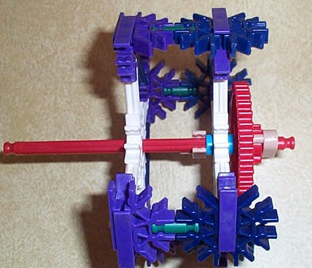 |
| This picture shows the framework with all internal gears in place. | 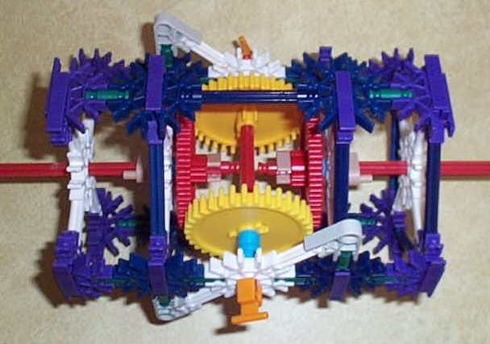 |
The ring gear is the part of the differential that is driven by a motor or whatever. By driving the ring gear, the entire framework of the differential is rotated.
|
Clip a white rod perpendicularly into the white connector at one end of the framework. For simplicity, the picture doesn't show the full framework, only the two connected "square" subassemblies at one end of it. |
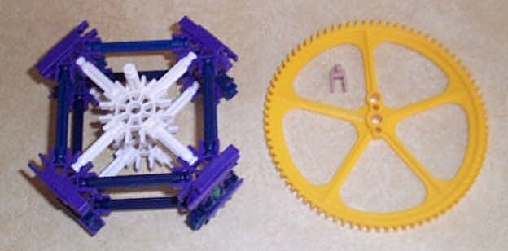 |
|
The large yellow gear is mounted onto this white rod and secured there with the tan clip. One axle of the differential will pass through the white connector and the center hole of the yellow gear. This allows the driving of the yellow gear to rotate the entire assembly while the axle is free to rotate independently of the yellow gear. |
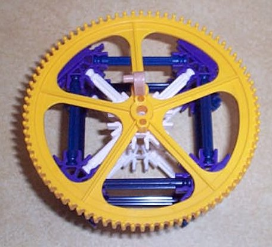 |
If the differential were mounted on a chassis and driven by the large yellow gear, both red axles whould turn at the same rate so long as they both had the same resistance on them.
Also observe that if the differential is held stationary and one red axle is rotated, the other rotates the same amount, but in the opposite direction.
The angular velocity of the entire differential is equal to half the sum of the angular velocities of the two axles.
K'nex doesn't come with large enough tires such that the wheels of a vehicle could be mounted directly to the axles of this differential. K'nex also doesn't come with small enough spur gears (the yellow ones) or bevel gears, such that a smaller differential could be built. To use this differential in a vehicle, some transmission mechanism (gears, drive chain or belt and pulley) would be needed to transfer motion from the axles of the differential to the wheels.